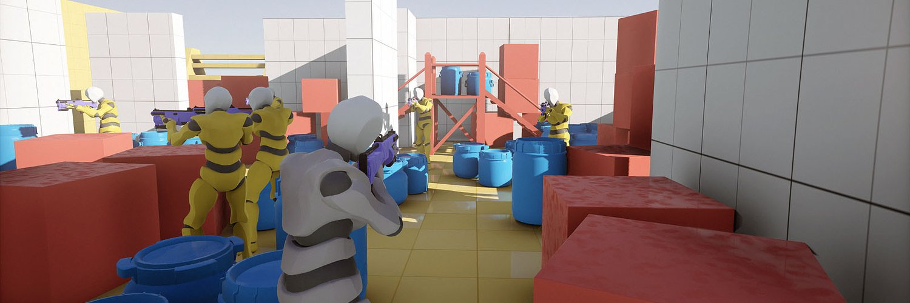

ARMORY3D

Armory is an open-source 3D game engine with full Blender integration, turning it into a complete game development tool. The result is a unified workflow from start to finish, making you work faster. No more jumping between different applications to constantly export data from one to another.
Behind the scenes, Armory is powered by open-source technology. Utilizing Kha - multimedia framework and Haxe - cross platform toolkit, to provide top class performance and portability.
Serious effort has been put into the render system. A render path is fully scriptable with deferred and forward paths supported out of the box. To define materials, Armory is based on the Cycles nodes. Materials are pre-compiled into shaders suitable for real-time rendering.


Armory is oriented towards nodes. For materials, a subset of standard Cycles nodes is used. Every scene created in Armory is renderable as-is in Cycles using path-tracing. This makes it possible to use Cycles for light baking with no separate setup. Performance remains the priority. To define game behaviour, a system of logic nodes is developed.
Everything is bundled to provide the ultimate game development tool. As a starting point, you can choose one of the available game prototype templates. Code editor with debugging support is integrated. For logic, use nodes, write scripts in Haxe, or embed WebAssembly code.


Create live scenes and export them to desktop, web, mobile and consoles, so everyone can experience them. Binary data format, asset compression and efficient build tools are developed to prevent bloated package sizes.
A robust animation system is employed, with support for GPU skinning, action blending and events. On top of that, each node can be animated on timeline using keyframes, just like you are used to.